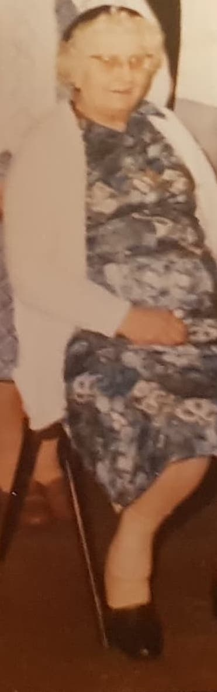
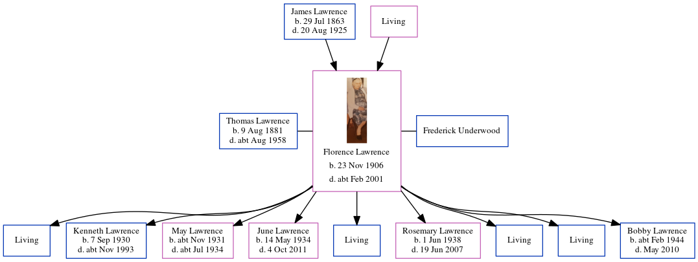

Florence Eva Underwood (née Lawrence) 1906 - c2001
[ Home ] | [ Calendar ] | [ Surnames Index ] | [ Errors ] | [ Family History ]The child of James Lawrence (an agricultural labourer) and Mary Baker, Florence Lawrence, the great-aunt of Nigel Horne, was born in Ramsgate, Kent, England on 23 Nov 19061,2,3,4,5,6 and was married twice - to Thomas Lawrence Frederick Underwood (c. Feb 1964 in Bridge, Kent, England)7. She had 9 children with Thomas Lawrence: Eric Aaron Robin, Kenneth Leonard Ernest, May Winifred Lilian, June Daphne Pansy, Peter J B, Rosemary Irene Peggy, Laud W H, Christopher Winston Thomas and Bobby Andrew James.
During her life, she was living in Monkton, Kent, England on 2 Apr 19112; and at The Lodge, Studdal, Kent on 29 Sept 19393.
She died c. Feb 2001 in Kent5.
Parents
- James was born on 29 Jul 1863
- Mary Ann Elizabeth
Children
- Kenneth Leonard Ernest was born on 7 Sept 1930
- May Winifred Lilian was born c. Nov 1931
- June Daphne Pansy was born on 14 May 1934
- Rosemary Irene Peggy was born on 1 Jun 1938
- Bobby Andrew James was born c. Feb 1944
Citations
- 1911 Census for England & Wales - Findmypast (was age 4 and the daughter of the head of the household)
- 1911 England Census Online publication - Provo, UT, USA: Ancestry.com Operations, Inc., 2011.Original data - Census Returns of England and Wales, 1911. Kew, Surrey, England: The National Archives of the UK (TNA), 1911. Data imaged from the National Archives, London, England. (Relation to Head of House: Daughter)
- 1939 Register - Findmypast (was recorded at this address)
- England & Wales births 1837-2006 - Findmypast
- England & Wales deaths 1837-2007 - Findmypast
- England & Wales, FreeBMD Birth Index, 1837-1915 Online publication - Provo, UT, USA: The Generations Network, Inc., 2006.Original data - General Register Office. England and Wales Civil Registration Indexes. London, England: General Register Office. © Crown copyright. Published by permission of the Cont
- England & Wales Marriages 1837-2005 - Findmypast
Notes
She was not married to Thomas W Lawrence.
Media
Florence Eva Lawrence

1911 Census for England & Wales - GBC/1911/RG14/04477/0177/8
England & Wales births 1837-2006 - BMD/B/1907/1/AZ/000352/024
1939 Register Transcription - TNA-R39-1822-1822J-002-11
England & Wales marriages 1837-2005 - BMD/M/1964/1/AZ/000679/211
England & Wales deaths 1837-2007 - BMD/D/2001/3/84571634
Family Tree
Map
Generated by ged2site. Last updated on Jul 3, 2024
Known Issues
Maiden name same as married name
Location for 2 Apr 1911 (Monkton, Kent, England) differs from mother's (2 Oast Cottage, Cleve, Monkton, Kent, England)
2 Apr 1911: Not living with either parent in childhood when aged 4